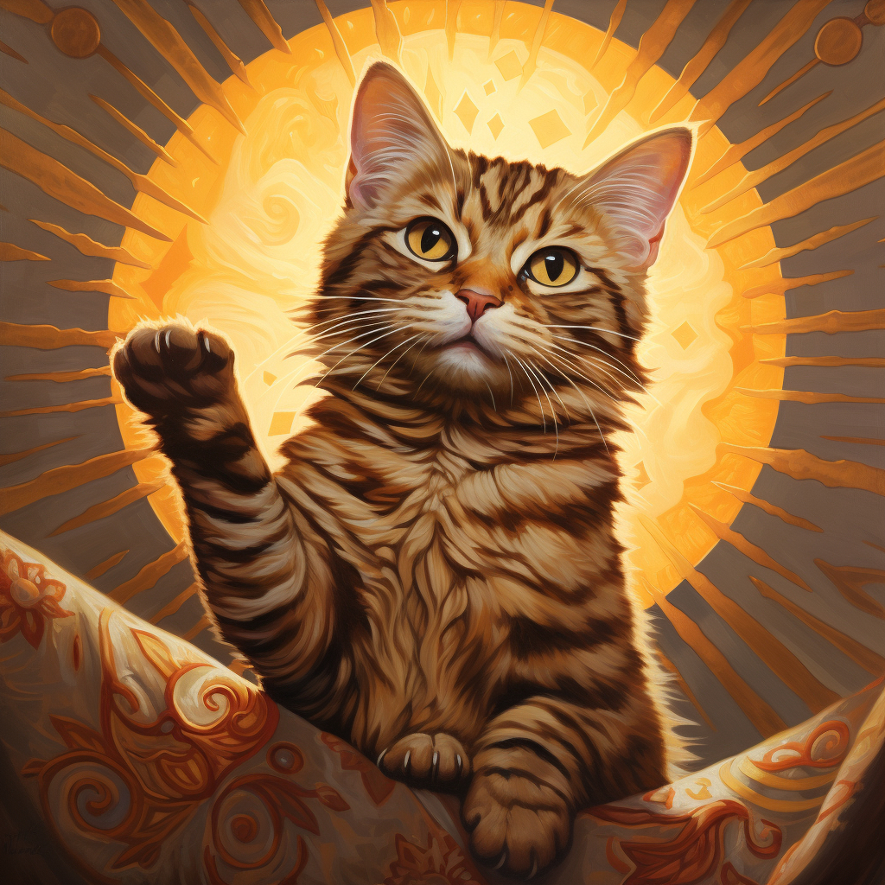

Дядя Фёдор, пёс и кот - продолжение 11.
Эдуард Успенский
Глава двадцатая. Солнышко
Вверху посылки письмо лежало:
«Дорогой кот!
Мы все тебя помним. Жалко, что ты от нас потерялся».
— Ничего себе потерялся! — говорит Матроскин. — Меня завхоз прогнал.
«Мы за тебя рады, что ты хорошо живёшь. А природу на дрова рубить не надо. Твой хозяин прав.
Посылаем тебе солнце маленькое, домашнее. Как с ним обращаться, ты знаешь. Видел у нас. Посылаем и регулятор — делать жарче и холоднее. Если ты что-то забыл, напиши нам, мы всё тебе объясним.
Всего хорошего.
Институт физики Солнца. Учёный у окна, в халате без пуговиц, у которого теперь одинаковые носки, — Курляндский».
Кот говорит:
— Теперь вы меня слушайте и не мешайте.
Он достал из ящика бумагу, свёрнутую в трубку. Это была большая переводная картинка, на которой солнце было нарисовано. Только не красками, а тонкими медными проволочками. Картинку надо было на потолок перевести и в розетку включить.
Они дружно стали шкаф отодвигать, чтобы удобнее с него солнце на потолок наклеить. А Хватайке это не понравилось. Он стал на них разные вещи сбрасывать, шипеть и кусаться. Но всё-таки они шкаф отодвинули. Кот взял солнце, намочил его и перевёл на потолок. А провода в электричество включил. Не просто так, а через чёрный ящик. На этом ящике ручка была. Кот ручку немного повернул, и тут чудо получилось: солнце светиться начало. Сначала краешек, потом ещё немного. В комнате сразу тепло и светло стало. И все обрадовались и запрыгали. И галчонок на шкафу тоже запрыгал. Только не от радости, а оттого, что ему жарко стало. Они скорее шкаф на место передвинули.
Дядя Фёдор говорит:
— Вы как хотите, а я буду загорать.
Он постелил одеяло на полу, лёг на него в трусиках и спину солнышку подставил. И кот на одеяло лёг, греться стал. И всё в доме ожило. И цветы к солнцу потянулись, и бабочки откуда-то выбрались. И телёнок Гаврюша стал скакать, как на лужайке.
А на дворе сырость, холод и слякоть. Скоро зима подойдёт. Их домик с улицы так и светится, как игрушечный. Даже какая-то синица в окно стучать начала. Но её не пустили. Нечего баловать. Вот будут морозы сильные, тогда пожалуйста, милости просим.
С этих пор у них очень хорошая жизнь началась. Утром они солнышко включают и весь день греются. На дворе холод, а у них лето жаркое.
А почтальон Печкин любопытный был. Он смотрит — по всей деревне люди печи топят, дым из труб идёт, а у дяди Фёдора дыма из трубы нет. Опять непорядок. Он решил узнать, в чём дело. Приходит он к дяде Фёдору:
— Здравствуйте. Я вам газету «Современный почтальон» принёс.
А сам глазами в печку уставился. Видит: в печке дрова не горят, а в доме тепло. Он ничего не понимает, а солнца домашнего не видит. Потому что оно как раз над ним на потолке было. Ему голову печёт.
Дядя Фёдор говорит:
— А мы газету «Современный почтальон» не выписываем. Это взрослая газета.
— Ах какая жалость! — сокрушается Печкин. — Значит, я что-то перепутал. — А сам глазами по сторонам водит: нет ли где электроплитки какой или камина.
Солнце его греет. Стоит он, потом обливается, но не уходит. Хочет секрет выведать.
— Значит, вы «Современный почтальон» не выписываете? Очень жалко. Это газета нужная. Там про всё на свете пишут.
— А сказки там печатают? Или рассказы про зверей? — спрашивает дядя Фёдор.
А Матроскин ручку у солнечного ящика повернул. Сделал солнце ещё теплее. Печкин даже шапку снял от жары. Только ему ещё хуже стало: солнце его в самую лысину печёт.
— Сказки про зверей? — спрашивает. — Нет, там больше про то пишут, как надо почту разносить и как автоматы марки наклеивают.
Тут у него от жары всё путаться стало. Он говорит:
— Нет, наоборот, автоматы почту разносят и марки наклеивают, как звери.
— Какие звери марки наклеивают? — спрашивает Шарик. — Лошади, что ли?
— При чём тут лошади? — говорит почтальон. — Я про лошадей ничего не говорил. Я говорил, что звери на автоматах работают и пишут сказки про то, как надо лошадям почту разносить.
Он замолчал и стал мысли собирать.
— Дайте мне градусник. Что-то жар у меня. Хочу измерить, сколько градусов.
Кот ему градусник принёс и стул подставил под солнцем. Печкин по градуснику постучал, чтобы температуру сбросить. А Хватайка спрашивает:
— Кто там?
— Это я, почтальон Печкин. Принёс журнал «Мурзилка».
— При чём тут «Мурзилка»? — спрашивает кот.
— Ах да! Это я вам «Современного почтальона» принёс, которого вы не выписываете. Потому что у вас документов нету.
Совсем он уже сварился. Даже пар от него пошёл, как от самовара. Вынимает он градусник и говорит:
— Тридцать шесть и шесть у меня. Кажется, всё в порядке.
— Какое там в порядке! — кричит кот. — У вас же температура сорок два!
— Почему? — испугался Печкин.
— А потому что тридцать шесть у вас и ещё шесть. Сколько это вместе будет?
Почтальон посчитал на бумажке. Сорок два вышло.
— Ой, мама! Значит, я уже умер. Скорее в больницу побегу! Сколько раз я к вам приходил, столько в больницу попадал… Не любите вы почтальонов!
А они почтальонов любили. Просто они Печкина не любили. Он с виду был добренький, а сам вредный был и любопытный.
Но только с этим солнцем не всё хорошо было. Из-за этого солнца у них самая большая неприятность началась. Заболел дядя Фёдор.
Глава двадцать первая. Болезнь дяди Фёдора
Дядя Фёдор дома всё время в трусах ходил — загорал. Он совсем коричневый сделался, будто с юга приехал. А если он на улицу выходил, ему одеваться надо было. Сначала майку, потом рубашку, потом штаны, потом свитер, потом шапку, шарф, пальто, варежки и валенки. Вот сколько всего. Это коту хорошо и Шарику — у них шуба всегда при себе. Даже купаются они вместе с шубой.
Однажды дяде Фёдору надо было на улицу выйти, синиц накормить. Он одеваться не стал, а так в трусиках и выскочил ненадолго.
А на дворе мороз, снег выпал. Дядя Фёдор и простудился. Пришёл домой — его знобит. Температура поднялась. Он под одеяло залез, ни есть, ни пить не хочет. Плохо ему.
Он говорит:
— Матроскин, Матроскин, кажется, я заболел.
Кот забеспокоился, стал его чаем с вареньем поить. Пёс в магазин побежал, мёд купил. Только дяде Фёдору всё хуже. Лежит он под одеялом, перед ним игрушки и книжки, а он на них и не смотрит. Шарик ушёл на кухню, сел в углу и заплакал. Хочет дяде Фёдору помочь, а не умеет.
— Уж лучше бы я сам заболел!
И кот совсем растерялся:
— Это я виноват: не уследил за дядей Фёдором. И зачем я только это солнце выписал?
Гаврюша подошёл к мальчику, руку лижет: вставай, мол, дядя Фёдор, чего лежишь! А дядя Фёдор не встаёт. Гаврюша глупенький был, ещё маленький. Он не понимал, что такое болезнь, а Шарик с котом хорошо понимали.
Кот говорит:
— Я за врачом побегу в город. Надо дядю Фёдора спасать.
— Куда же ты побежишь? — спрашивает Шарик. — Буран на дворе. Ты сам пропадёшь.
— Пусть лучше я пропаду, чем смотреть, как дядя Фёдор мучается.
— Тогда давай я побегу, — предлагает Шарик. — Я лучше бегаю.
— Дело не в беготне, — отвечает кот. — Я одного врача хорошего знаю, детского. Я его приведу.
Он нагрел молока в бутылочке, завернул в тряпку и уже хотел идти, а тут в дверь постучали. Хватайка спрашивает:
— Кто там?
Из-за двери отвечают:
— Свои.
Кот говорит:
— В такую погоду свои дома сидят. Телевизор смотрят. Только чужие шастают. Не будем дверь открывать!
Дядя Фёдор с кровати просит:
— Откройте дверь… Это мои папа и мама приехали.
И правильно. Это папа с мамой были. С ними Печкин пришёл.
— Видите, до чего они вашего ребёнка довели. Их надо немедленно в поликлинику сдать для опытов!
Шарик рассвирепел и давай почтальона кусать за валенки. Еле-еле Печкин за дверь выскочил.
А мама уже командует:
— Немедленно грелку мне!
Шарик с котом бросились, перевернули всё — нет грелки! Кот говорит:
— Давайте я буду грелкой. Я очень тёплый.
Мама взяла Матроскина, завернула в полотенце и к дяде Фёдору в кровать положила. Кот дядю Фёдора обнял лапками и греет.
— Теперь давайте мне все ваши лекарства.
Шарик коробку с лекарствами в зубах принёс, и мама дала дяде Фёдору таблетку с горячим молоком. И дядя Фёдор заснул.
— Только это не всё, — говорит мама. — Ему надо укол пенициллина сделать. Есть у вас пенициллин?
— Нет, — отвечает кот.
— А аптека в деревне есть?
— Нет аптеки.
— Я в город поеду за пенициллином, — говорит папа.
— Как же ты поедешь? — спрашивает мама. — Автобусы уже не ходят.
— Значит, «скорую помощь» из города вызовем. Не может быть так, чтобы ребёнок болел, а помочь нельзя.
Мама в окно поглядела и головой покачала.
— Не видишь, что на улице делается! Никакая «скорая помощь» не проедет. Придётся её трактором вытаскивать. Бедный мой дядя Фёдор!
Матроскин как подпрыгнет! Как закричит:
— Какие мы все дураки! А тр-тр Митя на что? У нас же трактор есть!
Папа обрадовался:
— Как вы здорово живёте! У вас даже трактор есть. Давайте скорее его заводить! Бензин наливать!
Шарик говорит:
— У нас трактор особенный. Продуктовый. На супе работает. На сосисках.
Папа не стал удивляться. Некогда было.
— У нас целая сумка продуктов есть. И апельсины, и шоколад. Годится?
— Нет, — говорит кот. — Не годится. Нечего Митю баловать. У нас картошки варёной целый котелок.
И пошёл папа с Шариком Митю заводить. Митя очень обрадовался.
Песню какую-то запел тракторную, и поехали они в город на полной картофельной скорости.
А Матроскин с мамой дядю Фёдора выхаживали. Мама скажет:
— Дайте полотенце мокрое!
Матроскин принесёт.
Мама скажет:
— А теперь градусник.
Кот ей:
— Пожалуйста!
Мама даже не думала, что коты такие умные бывают. Она думала, что они только мясо умеют воровать из кастрюль и на крышах кричать. А тут на тебе — не кот, а медсестра!
Матроскин ещё чаю вскипятил и накормил маму пирогами. Очень он маме понравился. И всё делать умеет, и беседовать с ним можно.
Мама говорит:
— Это я во всём виновата. Зря я вас прогнала. Жили бы вы у нас, и дядя Фёдор никуда бы не ушёл. И в доме бы порядок был. И папа у вас поучиться бы мог.
Кот стесняется:
— Подумаешь, пироги! Я ещё вышивать умею и на машинке шить.
Так они до полночи дядю Фёдора лечили и разговаривали. И вот уже тр-тр Митя вернулся с папой и с лекарствами.
Продолжение здесь